Yksinkertaista kaksi päätehtävää
Leivän tilaamisesta ja pöydän varaamisesta tuli lyhyitä, vaiheittaisia polkuja: valitse, täytä, valmis – selkeällä vahvistuksella ja noutokoodilla.
Juurileivän tilaamisen tai pöydän varaamisen pitäisi tuntua yhtä helpolta kuin sisään astuminen. Uudistuskonsepti ihanalle ja ainutlaatuiselle kahvila-leipomo-ravintolalle Mäntässä.
// HUOMTämä on oma konseptini siitä, miten Diivan verkkosivuja voisi kehittää vielä paremmin brändin näköisiksi. Kyseessä ei ole käytössä oleva sivusto.
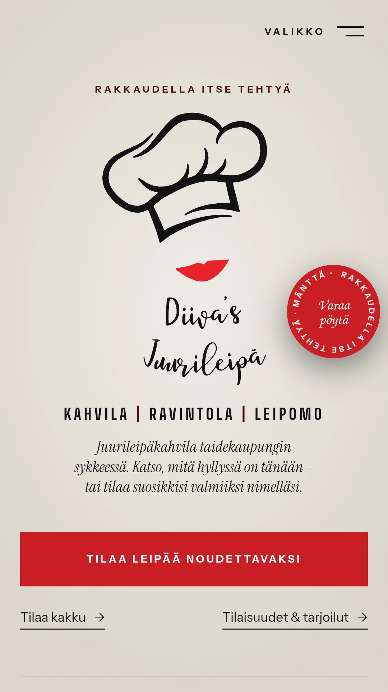
// LÄHTÖTILANNE
Diiva on lämmin kahvila, leipomo ja ravintola, jossa kaikki leivotaan käsin. Vanhoilla sivuilla oli kaikki tieto, mutta sen löytäminen vaati asiakkaalta vaivaa.
// MITÄ TEIN
Leivän tilaamisesta ja pöydän varaamisesta tuli lyhyitä, vaiheittaisia polkuja: valitse, täytä, valmis – selkeällä vahvistuksella ja noutokoodilla.
Raikastettu ilme, joka vastaa kahvilan omaa identiteettiä, jotta sivusto tuntuu samalta paikalta, johon astut sisään.
Karsin tekstit siihen, mitä asiakkaat oikeasti silmäilevät: lyhyet otsikot ja tärkeimmät asiat ensin.
// ENNEN → JÄLKEEN
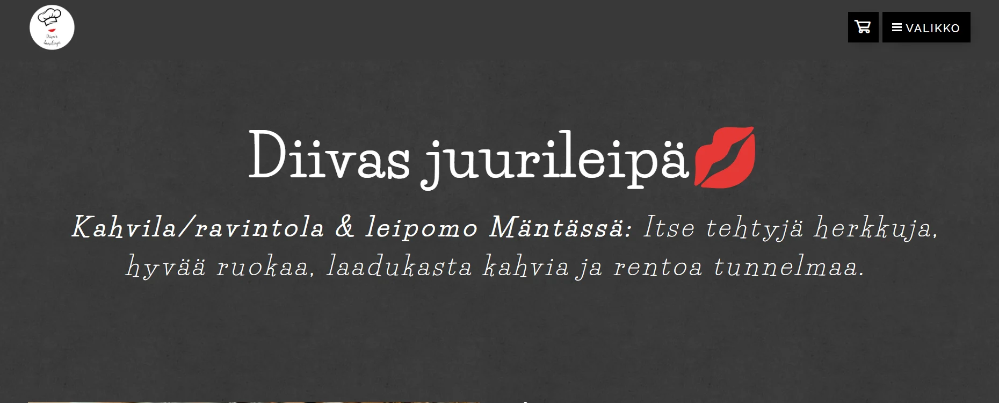

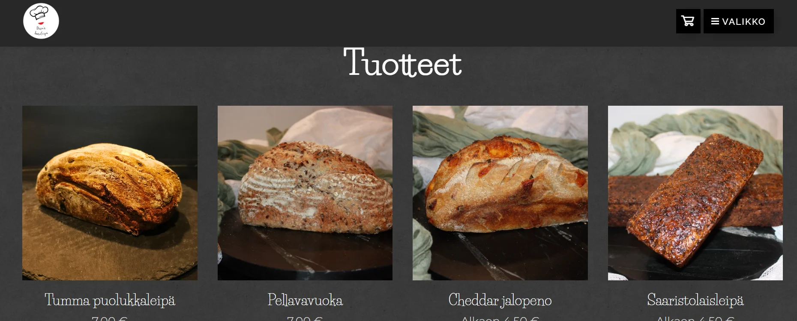
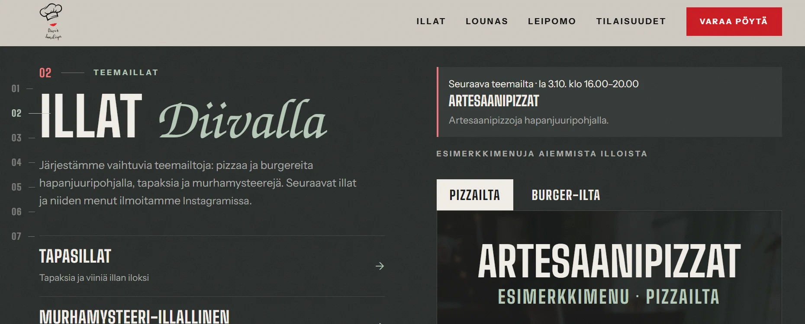
”Myydään tunnetta.”
// ASIAKKAILLE · MOBIILI
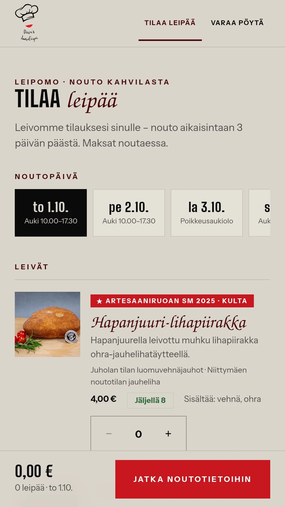
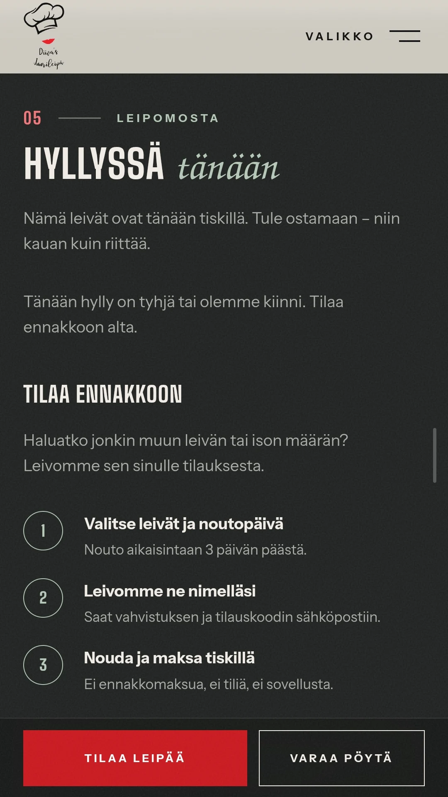
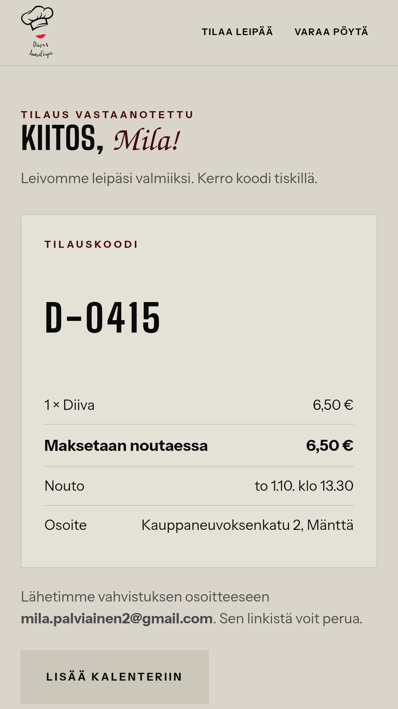
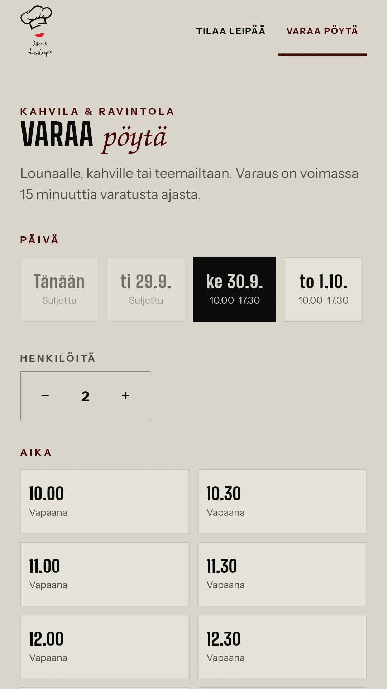
// HENKILÖKUNNALLE · HALLINTANÄKYMÄ
Hyvä tilauspolku toimii vain, jos leipomo pysyy perässä. Suunnittelin selkeän hallintanäkymän, josta omistaja näkee päivän tilaukset ja pöydät yhdellä silmäyksellä, asettaa päivittäisen leipämäärän ja hallinnoi lounaita, iltoja, kausimenuja ja pitopalvelupyyntöjä.
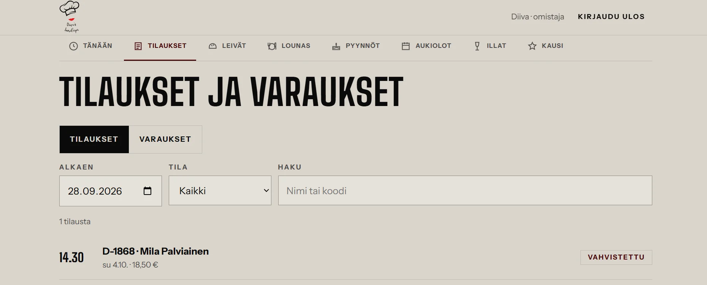
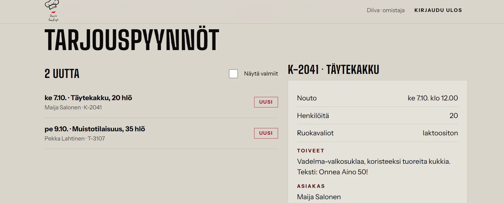
…ja taskussa.Sama hallintanäkymä toimii puhelimessa, joten omistaja voi tarkistaa päivän noudot tai päivittää kausimenun taikinaerien välissä.
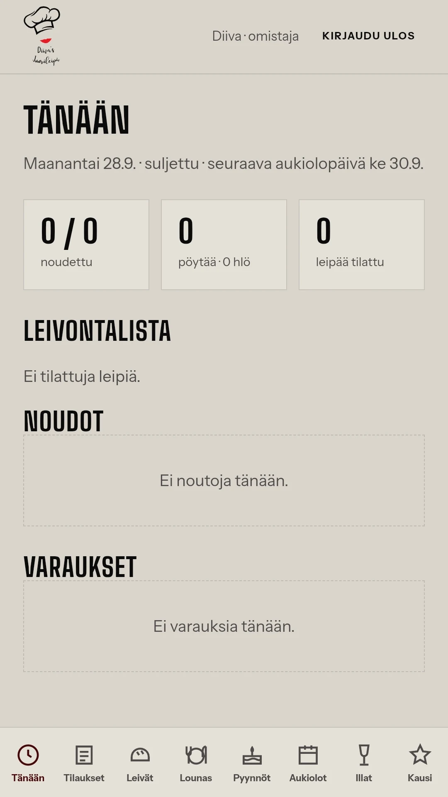
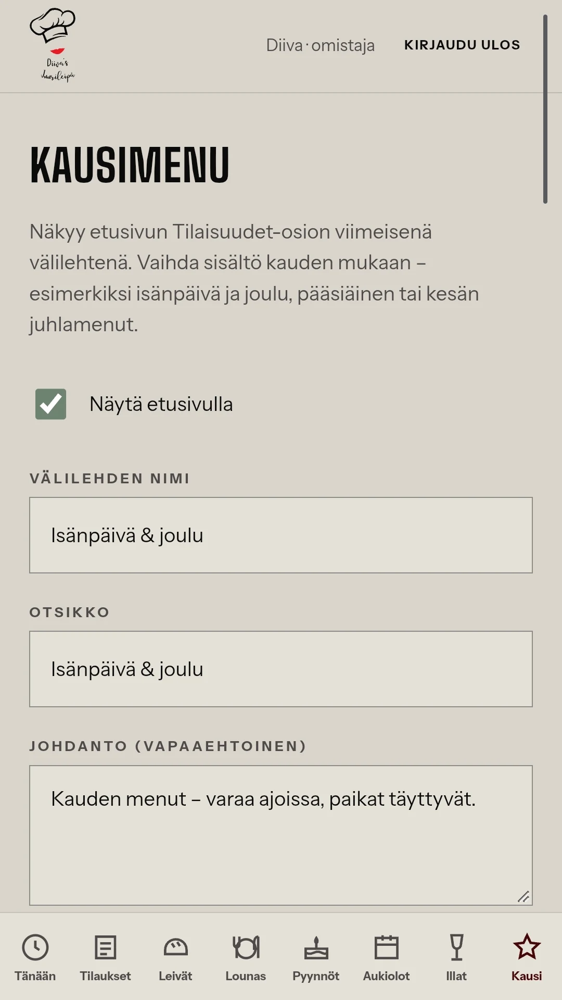
// MITÄ OPIN
// TILANNE
Oma konseptini siitä, miten Diivan sivustosta saisi vielä enemmän brändin näköisen. Sivusto ei ole käytössä.
Jaettu Diiva's Juurileivän luvalla.